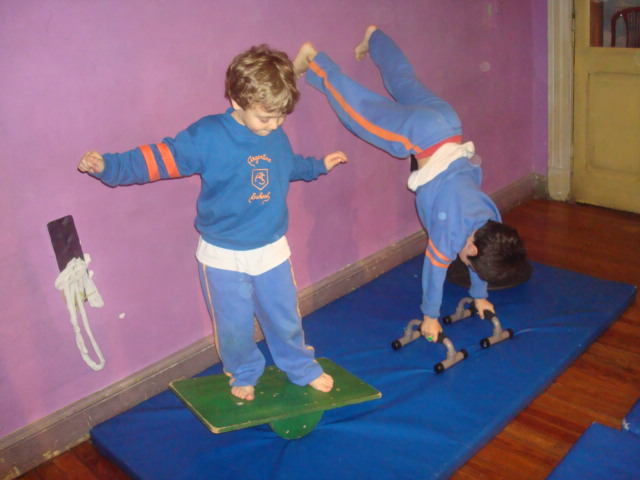
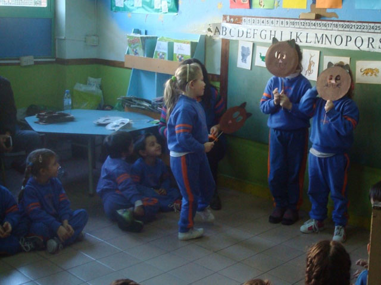

Nuestro jardín de infantes
Nuestro Jardín ofrece múltiples y variadas oportunidades para que los niños y niñas tomen contacto con diversas manifestaciones de la cultura en un ambiente educativo que posibilita el juego, la concentración, la reflexión, la interacción con los otros, la expresión individual y colectiva en un contexto de contención y afecto.
Son nuestros propósitos:
- Propiciar la integración en la tarea educativa de las culturas, los lenguajes, valorando las historias personales y respetando las individualidades peculiares.
- Promover el desarrollo de valores que reflejen la solidaridad, el cuidado de sí mismos y de los otros, el diálogo efectivo y la resolución conjunta de problemas.
- Brindar un clima de afecto y confianza a fin de que cada niño y niña adquiera seguridad en sus propias capacidades cognitivas, motrices, afectivas, sociales y expresiva en relación con los otros y con el conocimiento.
- Favorecer el desarrollo progresivo de la identidad, la autonomía personal.
- Arbitrar acuerdos y estrategias para la articulación entre los otros niveles del sistema educativo, considerando la continuidad y la coherencia interna.

En nuestro jardín desarrollamos el trabajo en talleres durante el turno tarde, en los cuales promovemos:
- El abordaje dinámico de contenidos y tareas desde el placer y el juego.
- Un ida y vuelta entre la tarea individual, en pequeños grupos y con el curso, prevaleciendo las actividades en subgrupos para favorecer la interacción, el intercambio y la producción compartida.
- La búsqueda de acuerdos para la organización y realización de las tareas conjuntas.
- La puesta en común de lo producido a fin de enriquecer lo realizado con los aportes de otras miradas.
- La elección entre diferentes propuestas, aspectos a trabajar, materiales, acciones, resoluciones.
- La realización de producciones, no necesariamente materiales, que deben hacerse paulatinamente con los demás, y mostrarse en clases abiertas.
Inglés:
La comprensión y la comunicación oral de la lengua extranjera a través de situaciones de juego para que los alumnos puedan expresarse espontáneamente a partir de sala de 3 años. Por medio de dramatizaciones, canciones, cuentos y juegos grupales se estimula el uso natural del vocabulario y estructuras aprendidas.
